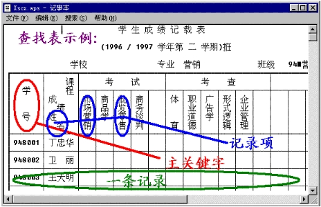
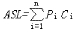
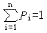
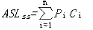
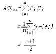
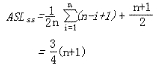

第二十九课
本课主题： 静态查找表（一）顺序表的查找教学目的： 掌握查找的基本概念，顺序表查找的性能分析
教学重点： 查找的基本概念
教学难点： 顺序表查找的性能分析
授课内容：

查找表： 是由同一类型的数据元素（或记录）构成的集合。 查找表的操作： 1、查询某个“特定的”数据元素是否在查找表中。
2、检索某个“特定的”数据元素的各种属性。
3、在查找表中插入一个数据元素；
4、从查找表中�h去某个数据元素。静态查找表 对查找表只作前两种操作 动态查找表 在查找过程中查找表元素集合动态改变 关键字 是数据元素（或记录）中某个数据项的值 主关键字 可以唯一的地标识一个记录 次关键字 用以识别若干记录 查找 根据给定的某个值，在查找表中确定一个其关键字等于给定的记录或数据元素。若表中存在这样的一个记录，则称查找是成功的，此时查找的结果为给出整个记录的信息，或指示该记录在查找表中的位置；若表中不存在关键字等于给定值的记录，则称查找不成功。 一些约定：
典型的关键字类型说明： typedef float KeyType;//实型
typedef int KeyType;//整型
typedef char *KeyType;//字符串型数据元素类型定义为： typedef struct{
KeyType key; // 关键字域
...
}ElemType;对两个关键字的比较约定为如下的宏定义： 对数值型关键字
#define EQ(a,b) ((a)==(b))
#define LT(a,b) ((a)<(b))
#define LQ(a,b) ((a)<=(b))对字符串型关键字
#define EQ(a,b) (!strcmp((a),(b)))
#define LT(a,b) (strcmp((a),(b))<0)
#define LQ(a,b) (strcmp((a),(b))<=0)
二、静态查找表
静态查找表的类型定义：
ADT StaticSearchTable{
数据对象D：D是具有相同特性的数据元素的集合。各个数据元素均含有类型相同，可唯一标识数据元素的关键字。
数据关系R：数据元素同属一个集合。
基本操作P：
Create(&ST,n);
操作结果：构造一个含n个数据元素的静态查找表ST。
Destroy(&ST);
初始条件：静态查找表ST存在。
操作结果：销毁表ST。
Search(ST,key);
初始条件：静态查找表ST存在，key为和关键字类型相同的给定值。
操作结果：若ST中在在其关键字等于key的数据元素，则函数值为该元素的值或在表中的位置，否则为“空”。
Traverse(ST,Visit());
初始条件：静态查找表ST存在，Visit是对元素操作的应用函数。
操作结果：按某种次序对ST的每个元素调用函数visit()一次且仅一次。一旦visit()失败，则操作失败。
}ADT StaticSearchTable
三、顺序表的查找
静态查找表的顺序存储结构
typedef struct {
ElemType *elem;
int length;
}SSTable;
顺序查找：从表中最后一个记录开始，逐个进行记录的关键字和给定值的比较，若某个记录的关键字和给定值比较相等，则查找成功，找到所查记录；反之，查找不成功。
int Search_Seq(SSTable ST,KeyType key){
ST.elme[0].key=key;
for(i=ST.length; !EQ(ST.elem[i].key,key); --i);
return i;
}
查找操作的性能分析：
查找算法中的基本操作是将记录的关键字和给定值进行比较，，通常以“其关键字和给定值进行过比较的记录个数的平均值”作为衡量依据。
平均查找长度：
为确定记录在查找表中的位置，需用和给定值进行比较的关键字个数的期望值称为查找算法在查找成功时的平均查找长度。

其中：Pi为查找表中第i个记录的概率，且

；Ci为找到表中其关键字与给定值相等的第i个记录时，和给定值已进行过比较的关键字个数。

等概率条件下有：

假设查找成功与不成功的概率相同： 
四、总结
什么是查找表
顺序表的查找过程